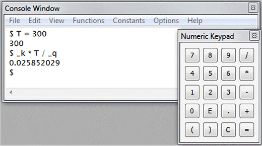

SigmaConsole is an advanced mathematical console. It supports the most common and useful functions. It’s easy to use: to evaluate an expression, simply write it, using operators (+ - * / ^), parenthesis and mathematical functions and press ENTER. You can also use the numeric keypadto enter numbers and operators. You can set variables (with any non-reserved name), using fundamental constants, etc. The SigmaConsole menu gives you an easy way to use the software functionality.

The following mathematical functions are supported:
exp(x) // exponential
ln(x) // natural logarithm
log(x) // decimal logarithm
log2(x) // base-2 logarithm
pow(x,n) // x^n
sin(x) // sine
cos(x) // cosine
tan(x) // tangent
asin(x) // arc sine
acos(x) // arc cosine
atan(x) // arc tangent
sinh(x) // hyperbolic sine
cosh(x) // hyperbolic cosine
tanh(x) // hyperbolic tangent
abs(x) // absolute value
sqrt(x) // square root
ceil(x) // ceiling, the smallest integer not less than x
floor(x) // floor, the largest integer not greater than x
int(x) // integer part of x
fmod(x,y) // x modulo y
erf(x) // error function
j0(x) // Bessel function of x of the first kind of order 0
j1(x) // Bessel function of x of the first kind of order 1
jn(n,x) // Bessel function of x of the first kind of order n
y0(x) // Bessel function of x of the second kind of order 0
y1(x) // Bessel function of x of the second kind of order 1
yn(n,x) // Bessel function of x of the second kind of order n
bern(x) // Bernoulli function: x / (exp(x) – 1)
hypot(x,y) // hypotenuse, sqrt(x2 + y2)
min(x,y) // smallest value of x and y
max(x,y) // largest value of x and y
rand(x) // random number between 0 and 1 (if x ? 0 then initialize the generator)
time() // elapsed time in seconds since January 1, 1970
sign(x) // sign of x (-1 if x < 0, +1 if x > 0 and 0 if x = 0)
exp2(x) // 2x
log2(x) // logarithm base 2
cbrt(x) // cubic root
lgamma(x) // log gamma function
tgamma(x) // gamma function
trunc(x) // nearest integer not greater than x
round(x) // nearest integer to x
rint(x) // rounds the floating-point to an integer
asinh(x) // hyperbolic area sine
acosh(x) // hyperbolic area cosine
atanh(x) // hyperbolic area tangent
erf(x) // error function
erfc(x) // complementary error function
Constants:
Pi // 3.14159...
_q // electron charge
_m // electron mass
_k // Boltzmann constant
_h // Planck constant
_c // speed of light in vacuum
_e // vacuum permittivity
_n // Avogadro constant
Commands:
format short // set the numerical format to short real
format long // set the numerical format to long real
format int // set the numerical format to integer
help // show help
exit // exit the application
Specifications
System requirements
SigmaGraph runs on PC with Windows™ XP, Vista or Windows 7/8/10 installed.
The basic hardware requirements are:
· Pentium or better microprocessor.
· 256 MB RAM.
· 5 MB of hard disk space.
· VGA monitor with 800x600 or higher resolution.
Contact
http://www.hamady.org
sidi@hamady.org
Copyright
Copyright(C) 1997-2020 Pr. Sidi HAMADY
All rights reserved.
http://www.hamady.org
sidi@hamady.org
License
SigmaGraph is protected by copyright laws and international copyright treaties, as well as other intellectual property laws and treaties.
Sidi Ould Saad Hamady expressly disclaims any warranty for SigmaGraph. SigmaGraph is provided ‘As Is’ without any express or implied warranty of any kind, including but not limited to any warranties of merchantability, noninfringement, or fitness of a particular purpose.
|